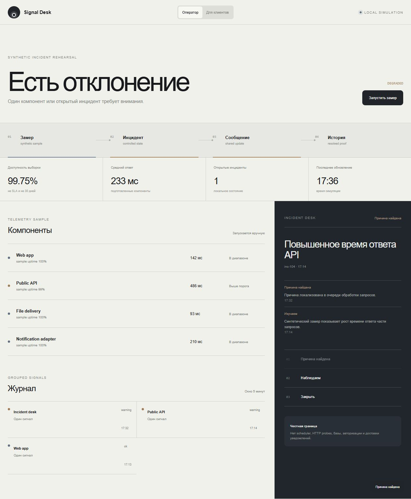

Сигнал зафиксирован
INCIDENT COMMUNICATION WORKFLOWОдна проблема.
Одна проблема.
Два языка.
Оператору нужны причины и переходы. Клиенту — короткое честное состояние без технического шума.
MEASUREDECIDEEXPLAIN
Открыть рабочий продукт ↗- Роль
- Architecture · UX · Frontend
- Формат
- Server-side rehearsal
- Проверка
- 14 tests

Не прятать сбой.
Не пугать клиента.
Один state machine хранит маршрут инцидента, а два представления показывают ровно тот уровень деталей, который нужен каждой аудитории.
- 01Телеметрия отдельно
- 02Инцидент отдельно
- 03Сообщение синхронно
Из сигнала —
в управляемый маршрут.
Подготовленный замер меняет компонент, но не закрывает инцидент сам. Оператор проходит допустимые состояния и публикует короткое обновление.
Причина сформулирована
Исправление наблюдается
История получает длительность
Проверяем workflow.
Не имитируем инфраструктуру.
Что реально
State machine, группировка алертов, длительность, независимость telemetry/incident, server-side сценарий и адаптивный UI.
Что подключается отдельно
Scheduler, HTTP probes, persistent storage, auth, subscribers, notification delivery, multi-region и hosted public page.